采集规则配置说明
参数总则：
约定采集参数格式如下
1，标签属性/值形式，如：class=articleList|tips,id=fxwb|fxMSN|fxMSN
2，标签名称形式，如：div,p,span
注意：程序会根据你填写的参数找到页面中所有匹配的HTML内容合并后再处理。
二：参数说明
现在以采集51CTO java频道数据 到JEECMS系统中为例，说明整个参数配置
1：基本参数设置，如图
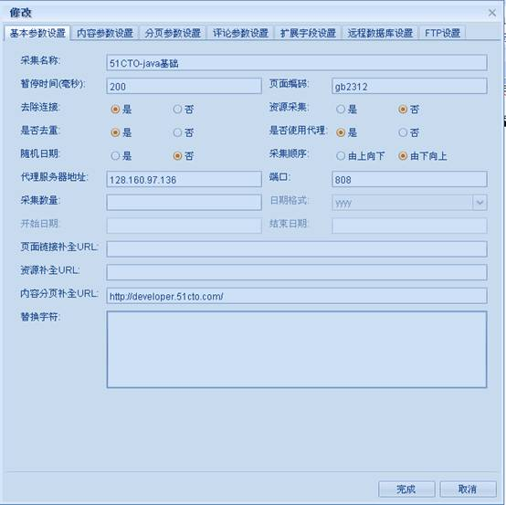
（1）：采集名称：此采集规则的名称。
（2）：暂停时间：采集一条数据后系统将等待配置的时间，单位：毫秒。
（3）：页面编码：要采集的页面的编码。
（4:）：去除连接：指是否去掉内容中的超连接。
（5）：资源采集：是否采集内容中包含的资源，如图片，视频文件等。
（6）：是否去重：是否允许采集重复的内容。
（7）：是否使用代理：是否允许使用代理。
（8）：随机日期：是否随机产生日期。
（9）：采集顺序：采集顺序。
（10）：代理服务器地址,端口：代理服务器地址, 代理服务器端口，配合（7）使用。
（11）：采集数量：配置后将采集配置数量的数据。
（12）：日期格式，开始日期，结束日期：这3项配合（8）使用.系统将按照配置的日期格式随机生成开始日期和结束日期之间的时间。
（13）：页面链接补全URL：当页面中链接为相对地址时，需要配置此值。
（14）：资源补全URL：当页面中资源地址为相对地址时，需要配置此值。
（15）：内容分页补全URL：当内容页分页地址是相对路径时，需要配置。
（16）：替换字符：此次采集要替换的内容
有2种格式
格式1为：
要替换的字符=替换后的字符，多个以逗号分隔（,）
格式2为：(这里的值将会被默认替换字符替换)
要替换的字符1, 要替换的字符2
可以混合使用：
要替换的字符=替换后的字符,要替换的字符1
2：内容参数设置，如图
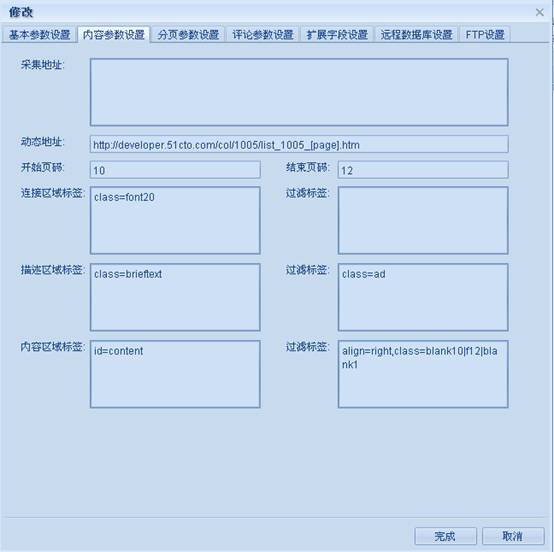
参数说明：
操作步骤：
1）：获取连接区域标签：
用火狐浏览器(安装了firebug插件)打开你要采集的列表页面。
以http://developer.51cto.com/col/1005/list_1005_1.htm为例，通过分析，我们找到页面中以下区域为目标区域：
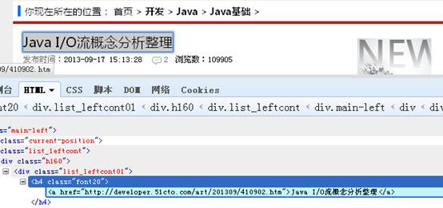
所以，连接区域标签处应该填写：class=font20，注意这里要去掉双引号。
得到连接区域标签后，系统将会把当前页面所有class=”font20”的标签内容采集回来并提取里面的url连接和标题。
这里没有多余的标签，顾过滤标签留空。
2）：获取描述区域标签：
用火狐浏览器(安装了firebug插件)打开你要采集的列表页面。
以http://developer.51cto.com/art/201309/410902.htm为例，通过分析，我们找到页面中以下区域为目标区域：
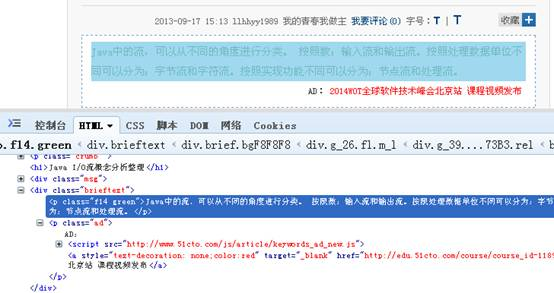
所以，描述区域标签处应该填写：class=brieftext,而该区域内有多余的<p class=”ad”>…</p>广告标签，不是我们想要的内容，顾需要过滤，所以过滤标签一栏就应该填写：class=ad
3）：获取内容区域标签：
用火狐浏览器(安装了firebug插件)打开你要采集的列表页面。
以http://developer.51cto.com/art/201309/410902.htm为例，通过分析，我们找到页面中以下区域为目标区域：
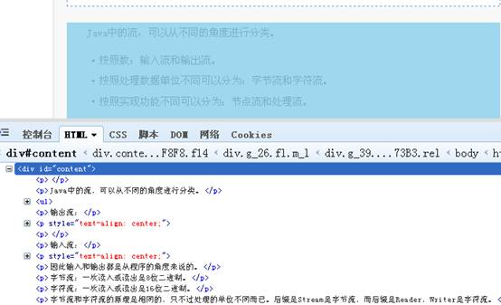
所以，内容区域标签一栏应该填写：id=content，但是该区域内有很我们不想要的内容，如：责任编辑等，需要过滤，所以我们在过滤标签处，填写需要过滤的标签：align=right,class=blank10|f12|blank1
3：分页参数设置，如图
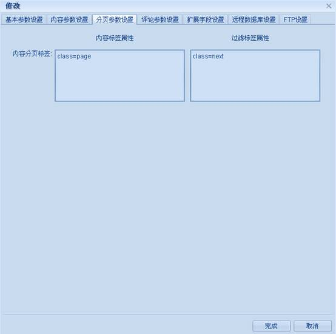
参数说明：
操作步骤：
1）：获取内容分页标签：
用火狐浏览器(安装了firebug插件)打开你要采集的列表页面。
以http://developer.51cto.com/art/201306/396786.htm为例，通过分析，我们找到页面中以下区域为目标区域：
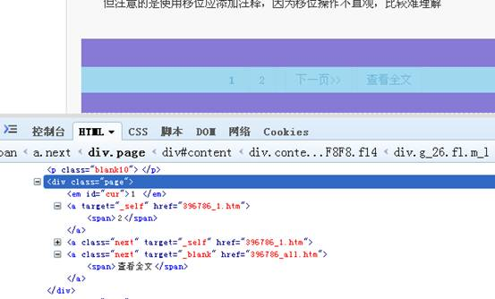
所以，内容分页标签一栏应该填写：class=page,但是该区域内，我们只需要采集数字区域包含的URL即可，所以其他标签应该过滤，顾，过滤标签一栏应该填写：class=next
4：评论参数设置，如图
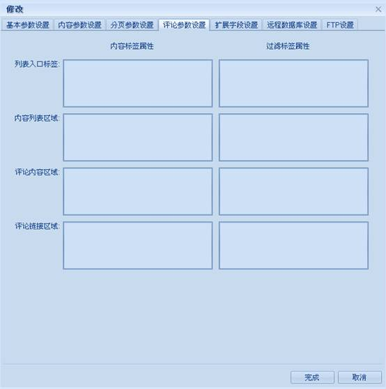
5：扩展字段设置，如图
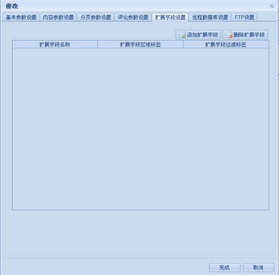
参数说明：
（1）：扩展字段名称: 扩展字段名称。
（2）：扩展字段区域标签：扩展字段要采集的值所在的标签。
（3）：扩展字段过滤标签：区域内要去除的标签。
此处扩展字段，将会出现在远程数据库设置->备选字段动态值一栏中，供选择。
7：远程数据库设置，如图
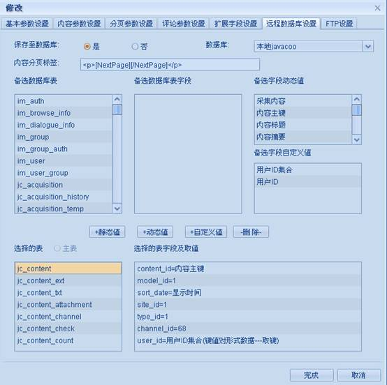
参数说明：
（1）：保存至数据库：是否保存至数据库。
（2）：数据库：选择一个在数据库配置中已经配置好的配置。
（3）：内容分页标签：此标签用于内容和内容分页都在同一字段中，根据分页标签来分页的情况，分页标签与具体程序处理有关，需分析本站的内容分页才能得出。
（4）：备选数据库表：连接指定数据库后，取到的全部表名称信息。
（5）：备选数据库表字段：选择一个表后，取得其所有字段信息。
（6）：备选字段动态值：由系统提供能够采集到的值名称，已经扩展字段中配置的字段名称。
（7）：备选字段自定义值：采集配置中，自定义数据配置列表信息。
（8）：选择的表：在（4）中选择的表，在此展示。
（9）：选择的表字段及取值：在（5）中选择字段，在（7）或者（8）中选择值，在此展示。
操作步骤：
（1）：选择一个数据库后，系统将数据库中所有表名称放在备选数据库表容器中。
（2）：选择一个表后，系统将表中所有字段信息放在备选数据库表字段容器中。
（3）：选择一个字段后，
可以选择备选字段动态值容器中的值，然后点击“+动态值”按钮，
也可以选择备选字段自定义值容器中的值，然后点击“+自定义值”按钮，
还可以直接点击“+静态值”按钮，输入静态值，然后
系统将会把选择的表放在“选择的表”容器中，字段以及取值放在“选择的表字段及取值”容器中。
（4）：最后在“选择的表”容器中，选择一张作为主表，主表中生成的主键将用于其他子表。
8：FTP设置，如图
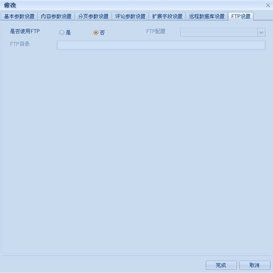
参数说明：
（1）：是否使用FTP：是否使用FTP。
（2）：FTP配置：选择一个FTP配置。
（3）：留空表示在FTP根目录创建在采集公共参数设置中配置的资源保存根路径+资源保存相对路径 目录，否则将在指定的目录创建。